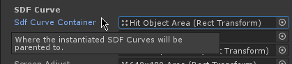
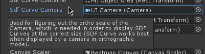
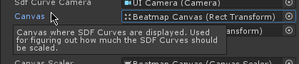
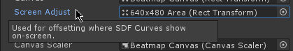

SDF Curve Properties
SDF Curve Container

Similar to Hit Object Container, SDF Curves are placed onto the Hit Object Area.
SDF Curve Camera

Due to how SDF shapes are rendered on-screen, they need the UI Camera to be correctly sized.
Canvas

Same with how SDF shapes need the UI Camera, they also need the UI Canvas to be correctly sized when rendered on-screen.
Screen Adjust

As explained in Beatmap Area Adjuster, when in portrait mode (i.e. mobile), the screen can be adjusted to have a different bottom offset.
SDF shapes need to know that bottom offset so they can adjust their position accordingly.